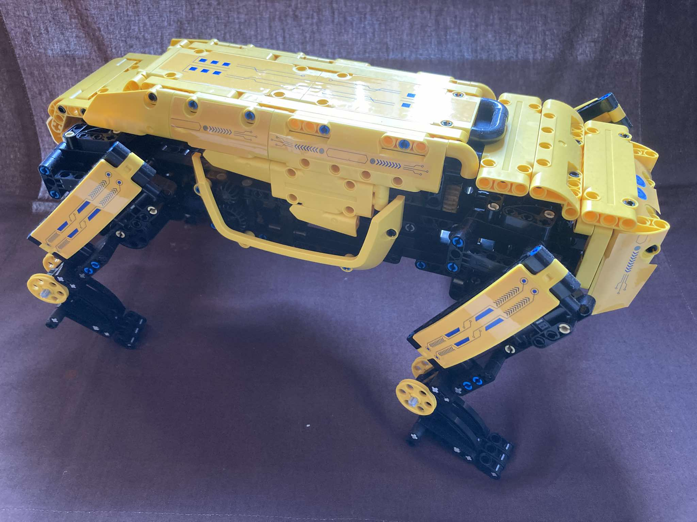
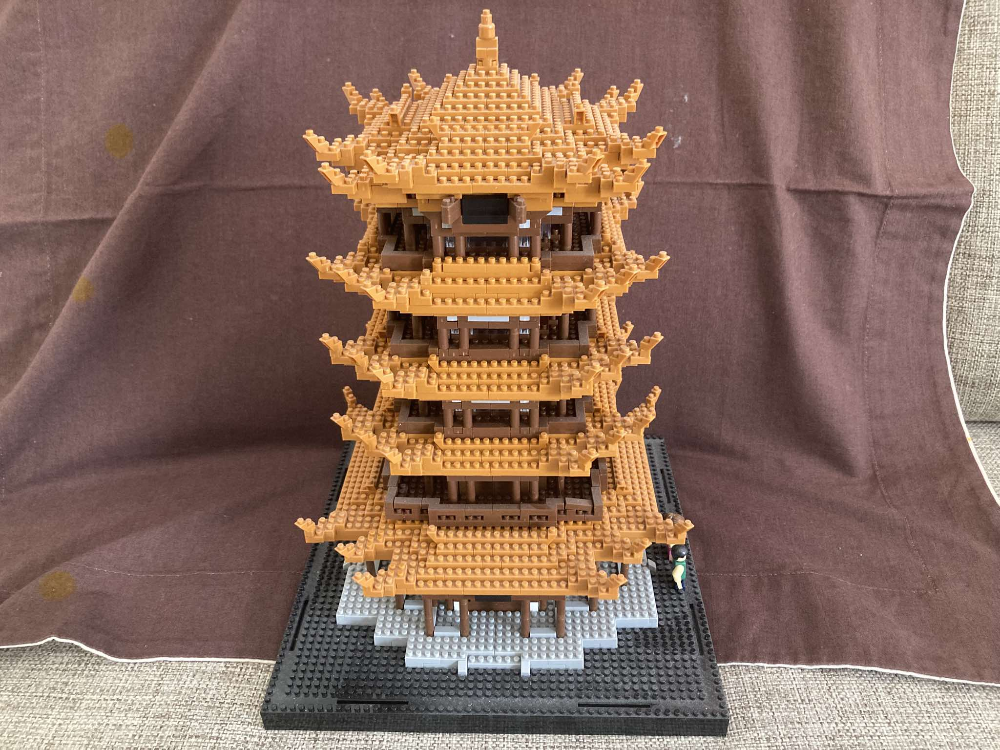
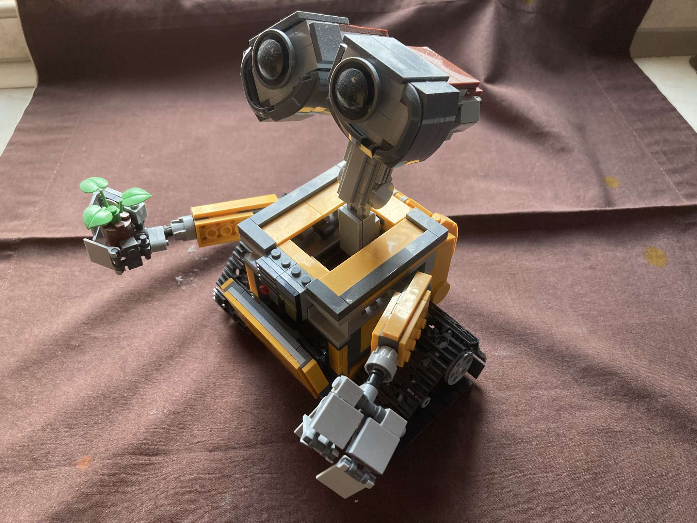

Hobbi
Forma1
Nagyon szeretem a Forma-1 versenyeket.Ha van időm akkor az edzéseket is nézem, kedvenc csapatom a Redbull Racing, kedvenc versenyzőm a Max Verstappen. Ő a példaképem.

A Red Bull Racing a Red Bull energiaital-gyár tulajdonában álló,
osztrák Formula–1-es csapat. A cég másik csapata a Scuderia AlphaTauri (korábban Scuderia Toro Rosso).
A csapat 2005-ben debütált az ausztrál nagydíjon. Jelenleg osztrák licensszel versenyeznek. 2010-2013 között négy egyéni és konstruktőri világbajnoki címet is nyertek Sebastian Vettellel. A 2014-től kezdődő turbókorszakban teljesítményük visszább esett, de végig ott voltak a legjobb három csapat között (kivétel 2015). Jelenlegi pilótafelállásukat a holland Max Verstappen, és a mexikói Sergio Pérez alkotja. 2021-ben és 2022-ben Max Verstappen révén megszerezték az hatodik egyéni bajnoki címüket. 2013 után, 2022-ben ismét világbajnok a csapat.
Max Verstappen; Hasselt, 1997. szeptember 30. –) belga–holland származású autóversenyző.
A 2021-es, 2022-es, 2023-as és 2024-es Formula–1 világbajnokság győztese.
2015-ben debütált a Scuderia Toro Rosso Formula–1-es csapatánál, mint minden idők legfiatalabb pilótája.
2016. május 5-én a fő csapatnál Danyiil Kvjat helyét Verstappen foglalta el, miután az orosz csalódást keltő teljesítményt nyújtott hazai Formula–1-es futamán.
A következő versenyt, a Barcelonában rendezett spanyol nagydíjat megnyerte,
ezzel pedig minden idők legfiatalabb Formula–1-es dobogósa, és futamgyőztese lett, első hollandként a sportág történetében.
2021-ben világbajnok lett a Red Bull-lal, és ő lett az első holland, aki megszerezte ezt a címet.
LEGO
Nagyon szeretek az apró kockákból különböző dolgokat építeni. A kedvenceim azok a tárgyak, amelyek motorosak és távirányitóval vezérelhetőek. De az sem baj ha nem motorizáltak csak kellően bonyolultak legyenek.
|  |

|
| Motoros távirányitós robot kutya | Motoros távirányitós Forma-1 versenyautó |
|  |  |
| Pagoda | Wall-E |